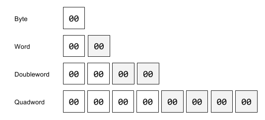
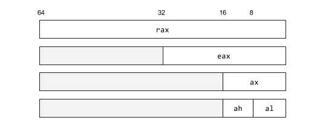
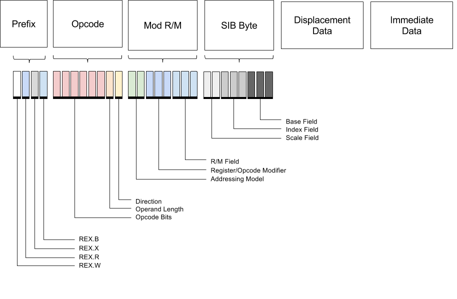
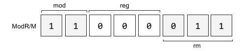

Monads to Machine Code
Just-in-time or JIT compilation is compilation done by dynamically generating executable code. It’s a common technique used in many language runtimes to generate optimized code for hot code paths as well ahead of time compilation for various tasks.
So let’s build a small LLVM-like intermediate language and JIT execution engine in Haskell. This will only function with modern Linux and x86-64 architecture, although in principle this will work on any platform if you can make the appropriate FFI calls to mmap and mprotect syscalls on your respective platform.
Source code is available here.
Types
The x86-x64 instruction set is the 64-bit revision of x86 instruction set which was first developed for the Intel 8086 CPU family. The base types which hardware operates over are integers and floating point types. Let us just consider the integral types for now, these come in four major varieties:

On the Intel architecture numbers are represented little endian meaning lower significant bytes are stored in lower memory addresses. The whole memory representation for a value is partitioned into high bits and low bits. For example the hexadecimal number 0xc0ffee as a DWORD is stored in memory as:
In Haskell unboxed integral machine types are provided by the Data.Word module.
data Word8 = W8# Word#
data Word16 = W16# Word#
data Word32 = W32# Word#
data Word64 = W64# Word#Pointers are simply literal addresses to main memory, where the underlying access and storage are managed by the Linux kernel. To model this abstractly in Haskell we’ll create a datatype containing the possible values we can operate over.
data Val
= I Int64 -- Integer
| R Reg -- Register
| A Word32 -- Addr
deriving (Eq, Show)To convert from Haskell types into byte sequences we’ll use the binary library to convert integral types into little endian arrays of bytes.
bytes :: Integral a => a -> [Word8]
bytes x = fmap BS.c2w bs
where
bs = unpack $ runPut $ putWord32le (fromIntegral x)For example given a hexadecimal literal this will expand it out into an array of it’s bit components.
val = bytes 0xc0ffee -- [238,255,192,0]Registers
The x64 architecture contains sixteen general purpose 64-bit registers capable of storing a quadword. They major ones are labeled rax, rbx, rcx, rdx, rbp, rsi, rdi, and rsp.
Each of the registers is given a specific index (r), which will be used in the binary representation of specific instructions that operate over these registers.
| RAX | RBX | RCX | RDX | RBP | RSI | RDI | RSP | |
|---|---|---|---|---|---|---|---|---|
| r = | 0 | 1 | 2 | 3 | 4 | 5 | 6 | 7 |
Each of these registers can be addressed as a smaller register containing a subset of the lower bits. The 32-bit register of rax is eax. These are shown in the table below.

These smaller registers are given specific names with modified prefixes.
| 64-bit | 32-bit | 16-bit |
|---|---|---|
| rax | eax | ax |
| rbx | ebx | bx |
| rcx | ecx | cx |
| rdx | edx | dx |
| rsp | esp | sp |
| rbp | ebp | bp |
| rsi | esi | si |
| rdi | edi | di |
| rip | eip | ip |
In Haskell we model this a sum type for each of the 64-bit registers. Consider just the 64-bit registers for now.
data Reg
= RAX -- Accumulator
| RCX -- Counter (Loop counters)
| RDX -- Data
| RBX -- Base / General Purpose
| RSP -- Current stack pointer
| RBP -- Previous Stack Frame Link
| RSI -- Source Index Pointer
| RDI -- Destination Index Pointer
deriving (Eq, Show)The index for each register is defined by a simple pattern match case expression.
index :: Reg -> Word8
index x = case x of
RAX -> 0
RCX -> 1
RDX -> 2
RBX -> 3
RSP -> 4
RBP -> 5
RSI -> 6
RDI -> 7Monads
Monads are an algebraic structure with two functions (bind) and (return) and three laws.
bind :: Monad m => m a -> (a -> m b) -> m b
return :: Monad m => a -> m aThe compiler will desugar do-blocks of the form into a canonical form involving generic bind and return statements.
f :: Monad m => m Int
f = do
a <- x
b <- y
return (a+b)Is transformed into:
f :: Monad m => m Int
f =
bind x (\a ->
bind y (\b ->
return (a+b))Monad is implemented as a typeclass indexed by a parameter m, that when instantiated with a typeclass instances replaces the bind and return functions with a specific implementation of the two functions (like State or Reader).
f :: State MyState Int
f =
bindState x (\a ->
bindState y (\b ->
returnState (a+b))The State monad is an instance of Monad with several functions for composing stateful logic.
get :: State s s -- get the state
put :: s -> State s () -- set the state
modify :: (s -> s) -> State s () -- apply a function over the stateFor example a little state machine that holds a single Int value would be written like the following.
machine :: State Int Int
machine = do
put 3
modify (+1)
get
val :: Int
val = execState machine 0More common would be to have the state variable s be a record with multiple fields that can be modified. For managing our JIT memory we’ll create a struct with the several fields.
data JITMem = JITMem
{ _instrs :: [Instr]
, _mach :: [Word8]
, _icount :: Word32
, _memptr :: Word32
, _memoff :: Word32
} deriving (Eq, Show)This will be composed into our X86 monad which will hold the JIT memory as we assemble individual machine instructions and the pointer and memory offsets for the sequence of assembled instructions.
type X86 a = StateT JITMem (Except String) aJIT Memory
To start creating the JIT we first need to create a block of memory with executable permissions. Inside of C runtime we can get the flags needed to be passed to the various mmap syscall to create the necessary memory block.
#define PROT_NONE 0x00 /* No access. */
#define PROT_READ 0x04 /* pages can be read */
#define PROT_WRITE 0x02 /* pages can be written */
#define PROT_EXEC 0x01 /* pages can be executed */
#define MAP_FILE 0x0001 /* mapped from a file or device */
#define MAP_ANON 0x0002 /* allocated from memory, swap space */
#define MAP_TYPE 0x000f /* mask for type field */Then we simply allocate a given block of memory off the Haskell heap via mmap with the executable flags.
newtype MmapOption = MmapOption CInt
deriving (Eq, Show, Ord, Num, Bits)
protExec = ProtOption 0x01
protWrite = ProtOption 0x02
mmapAnon = MmapOption 0x20
mmapPrivate = MmapOption 0x02
allocateMemory :: CSize -> IO (Ptr Word8)
allocateMemory size = mmap nullPtr size pflags mflags (-1) 0
where
pflags = protRead <> protWrite
mflags = mapAnon .|. mapPrivateHaskell pointers can be passed to our JIT’d code by simply casting them into their respective addresses on the Haskell heap.
heapPtr :: Ptr a -> Word32
heapPtr = fromIntegral . ptrToIntPtrFor example if we want allocate a null-terminated character array and pass a pointer to it’s memory to our JIT’d code we can write down a asciz to synthesize this memory from a Haskell string and grab the heap pointer.
asciz :: [Char] -> IO Word32
asciz str = do
ptr <- newCString (str ++ ['\n'])
return $ heapPtr ptrFor C functions we simply use the dynamic linker to grab the function pointer the given symbol in the memory space of the process. The Haskell runtime links against glibc’s stdio.h and math.h so these symbols will all be floating around in memory.
extern :: String -> IO Word32
extern name = do
dl <- dlopen "" [RTLD_LAZY, RTLD_GLOBAL]
fn <- dlsym dl name
return $ heapPtr $ castFunPtrToPtr fnWhen we’ve compiled our byte vector of machine code we’ll copy into executable memory.
jit :: Ptr Word8 -> [Word8] -> IO (IO Int)
jit mem machCode = do
code <- codePtr machCode
withForeignPtr (vecPtr code) $ \ptr -> do
copyBytes mem ptr (8*6)
return (getFunction mem)Then we’ll use the FFI to synthesize a function pointer to the memory and invoke it.
foreign import ccall "dynamic"
mkFun :: FunPtr (IO Int) -> IO Int
getFunction :: Ptr Word8 -> IO Int
getFunction mem = do
let fptr = unsafeCoerce mem :: FunPtr (IO Int)
mkFun fptrAssembly
Before we start manually populating our executable code with instructions, let’s look at assembly form of what we’ll write and create a small little DSL in Haskell make this process closer to the problem domain. Assembly is the intermediate human readable representation of machine code. Both clang and gcc are capable of dumping out this representation before compilation. For example for the following C program takes two integers passed in registers, multiplies them respectively and adds the result.
int f(int x, int y)
{
return (x*x)^y;
}Internally the C compiler is condensing the Destructuring the expressions into a linear sequence instructions storing the intermediate results in scratch registers and writing the end computed result to return register. It then selects appropriate machine instruction for each of the abstract operations.
// pseudocode for intermediate C representation
int f() {
int x = register(rdi);
int y = register(rsi);
int tmp1 = x*x;
int tmp2 = tmp1^y;
return tmp2;
}We can output the assembly to a file add.s. We’ll use the Intel Syntax which puts the destination operand before other operands. The alternate AT&T syntax reverses this convention.
$ clang -O2 -S --x86-asm-syntax=intel xor.cThe generated code will resemble the following. Notice that there are two kinds of statements: directives and instructions. Directive are prefixed with a period while instructions are an operation together with a list operands. Statements of instructions are grouped into labeled blocks are suffixed with a colon for example f: is the label containing the logic for the function f.
.file "xor.c"
.text
.globl f
.type f, @function
.intel_syntax noprefix
f:
mov eax, edi
imul eax, edi
xor eax, esi
retThe assembler will then turn this sequence of instructions into either an executable or an object file containing the generated machine code. To disassemble the output we can use objdump to view the hex sequence of machine instructions and the offsets within the file.
$ objdump -M intel -d xor.o
xor: file format elf64-x86-64
Disassembly of section .text:
0000000000000000 <f>:
0: 89 f8 mov eax,edi
2: 0f af c7 imul eax,edi
5: 31 f0 xor eax,esi
7: c3 ret The compiled program in memory is then a contiguous array of bytes, which is evaluated by moving the instruction pointer at the start address.
89 f8 0f af c7 31 f0 c3Instructions
Instructions consist of two parts, an opcode and a set of operands which specify labels, registers, or addresses to memory which the CPU will execute over for the give instruction. We’ll consider a subset of interesting operations which operate over integers and manipulate the call stack.
data Instr
= Ret
| Mov Val Val
| Add Val Val
| Sub Val Val
| Mul Val
| IMul Val Val
| Xor Val Val
| Inc Val
| Dec Val
| Push Val
| Pop Val
| Call Val
| Loop Val
| Nop
| Syscall
deriving (Eq, Show)To add to the JIT memory we’ll simply modify the state by appending an instruction to the _mach field and adjusting the memory offset pointer by the length of instructions added.
emit :: [Word8] -> X86 ()
emit i = modify $ \s -> s
{ _mach = _mach s ++ i
, _memoff = _memoff s + fromIntegral (length i)
}Operands
Registers
Registers are identified as lowercase (i.e. rbp, rsp). In our expression builder we’ll simply write down several functions which construct a register value type from an underlying Reg value.
rax :: Val
rax = R RAX
rsi :: Val
rsi = R RSIImmediate Operands
Immediate operands are direct references to constants (literals or memory addresses) or labels. For example:
add eax,42
add eax,0xffFor immediate values we simply push the array of bytes for the number directly on the byte sequence.
imm :: Integral a => a -> X86 ()
imm = emit . bytesOpcodes
The full instruction set for x86 is vast and including AVX, SSE and other specialized intrinsics there is an extraordinary amount of complexity and quirky specifications. Each of these abstract instructions can have multiple opcodes for each type of operands it may take. For example the mov instruction for register to register movement has opcode 0x89 while moving immediate data into a register has opcode 0xC7.
The reference for the most common operations the x86asm.net site has a very useful quick reference. For the full set of possible instructions on your modern Intel processor refer to the 1500 page Intel Software Developer’s Manual.
To lookup the numerical opcodes for a given instructions, we use a specific naming conventions for the operands.
| Prefix | Description |
|---|---|
r<size> |
Register Operand |
imm<size> |
Immediate Operand |
m<size> |
Memory Operand |
So for example:
| Prefix | Description |
|---|---|
r64 |
64 bit register |
imm8 |
8 immediate operand |
m32 |
32 memory operand |
For opcodes that operate over a set of possible operands, these are demarcated with a slash, in the form r8/r16/r32.
For our limited set of instructions there are two types of opcodes.
- 1-Byte Opcodes
- 2-Byte Opcodes
| Instruction | Opcode |
|---|---|
| CALL | E8 |
| RET | C3 |
| NOP | 0D |
| MOV | 89 |
| PUSH | 50 |
| POP | 58 |
| LOOP | E2 |
| ADD | 83 |
| SUB | 29 |
| MUL | F7 |
| DIV | F7 |
| INC | FF |
| DEC | FF |
| NEG | F7 |
| CMP | 39 |
| AND | 21 |
| OR | 09 |
| XOR | 31 |
| NOT | F7 |
| ADC | 11 |
| IDIV | F7 |
| IMUL | F7 |
| XCHG | 87 |
| BSWAP | C8 |
| SHR | C1 |
| SHL | C1 |
| ROR | C0 |
| RCR | C0 |
| BT | BA |
| BTS | BA |
| BTR | B3 |
| JMP | EB |
| JE | 84 |
| JNE | 85 |
| SYSCALL | 05 |
On top of this opcodes may have an additional prefixes which modify the sizes of arguments involved. These were added to allow 32-bit compatibility in the transition between 32-bit and 64-bit systems and preserve the underlying opcodes of the 32-bit system. For instance the following mov instructions all operate over registers and perform the same action but over different sizes.
mov al,255
mov ax,255
mov eax,255
mov rax,255But translate into different opcodes depending on size.
b0 ff mov al,0xff
66 b8 ff 00 mov ax,0xff
b8 ff 00 00 00 mov eax,0xff
48 c7 c0 ff 00 00 00 mov rax,0xff| prefix | opcode | data | assembly | meaning |
|---|---|---|---|---|
| 66 | b0 | ff | mov al, 0xff | 8-bit load |
| 66 | b8 | ff 00 | mov ax, 0xff | load with a 16-bit prefix (0x66) |
| 66 | b8 | ff 00 00 00 | mov eax, 0xff | load with default size of 32 bits |
| 48 | c7 c0 | ff 00 00 00 | mov rax, 0xff | Sign-extended load using REX 64-bit prefix (0x48) |
Machine Code
Ok, let’s look at the full structure of an instruction. It consists of several parts.

The sizes of these parts depend on the size and type of the opcode as well as prefix modifiers.
| Prefix | Opcode | Mod R/M | Scale Index Base | Displacement | Immediate |
|---|---|---|---|---|---|
| 1-4 bytes | 1-3 bytes | 1 Byte | 1 Byte | 1-4 Bytes | 1-4 Bytes |
Prefix

The header fixes the first four bits to be constant 0b0100 while the next four bits indicate the pretense of W/R/X/B extensions.
The W bit modifies the operation width. The R, X and B fields extend the register encodings.
- REX.W – Extends the operation width
- REX.R – Extends ModRM.reg
- REX.X – Extends SIB.index
- REX.B – Extends SIB.base or ModRM.r/m
ModR/M byte
The Mod-Reg-R/M byte determines the instruction’s operands and the addressing modes. These are several variants of addressing modes.
- Immediate mode - operand is part of the instruction
- Register addressing - operand contained in register
- Direct Mode - operand field of instruction contains address of the operand
- Register Indirect Addressing - used for addressing data arrays with offsets
- Indexing - constant base + register
- Indexing With Scaling - Base + Register Offset * Scaling Factor
- Stack Addressing - A variant of register indirect with auto increment/decrement using the RSP register implicitly
- Jump relative addressing - RIP + offset
| mod | meaning |
|---|---|
| 00 | Register indirect memory addressing mode |
| 01 | Indexed or base/indexed/displacement addressing mode |
| 10 | Indexed or base/indexed/displacement addressing mode + displacement |
| 11 | R/M denotes a register and uses the REG field |
| reg | |
|---|---|
| rax | 000 |
| rcx | 001 |
| rdx | 010 |
| rbx | 011 |
| rsp | 100 |
| rbp | 101 |
| rsi | 110 |
| rdi | 111 |
In the case of mod = 00, 01 or 10
| r/m | meaning |
|---|---|
| 000 | [BX+SI] or DISP[BX][SI] |
| 001 | [BX+DI] or DISP[BX+DI] |
| 010 | [BP+SI] or DISP[BP+SI] |
| 011 | [BP+DI] or DISP[BP+DI] |
| 100 | [SI] or DISP[SI] |
| 101 | [DI] or DISP[DI] |
| 110 | Displacement-only or DISP[BP] |
| 111 | [BX] or DISP[BX] |
For example given the following instruction that uses register direct mode and specifies the register operand in r/m.
mov rbx,raxWe have:
mod = 0b11
reg = 0b000
r/m = rbx
r/m = 0b011
ModRM = 0b11000011
ModRM = 0xc3
Scale Index Base

Scale is the factor by which index is multipled before being added to base to specify the address of the operand. Scale can have value of 1, 2, 4, or 8. If scale is not specified, the default value is 1.
| scale | factor |
|---|---|
| 0b00 | 1 |
| 0b01 | 2 |
| 0b10 | 4 |
| 0b11 | 8 |
Both the index and base refer to register in the usual index scheme.
| scale/base | |
|---|---|
| rax | 000 |
| rcx | 001 |
| rdx | 010 |
| rbx | 011 |
| rsp | 100 |
| rbp | 101 |
| rsi | 110 |
| rdi | 111 |
Instruction Builder
Moving forward we’ll create several functions mapping to X86 monadic operators which assemble instructions in the state monad. Let’s do some simple arithmetic logic first.
arith :: X86 ()
arith = do
mov rax (I 18)
add rax (I 4)
sub rax (I 2)
imul rax (I 2)
retEach of these functions takes in some set of operands given by the algebraic datatype Val and pattern matches on the values to figure out which x86 opcode to use and how to render the values to bytes.
ret
The simplest cases is simply the return function which takes no operands and is a 1-bit opcode.
ret :: X86 ()
ret = do
emit [0xc3]add <r64> <imm32>
Add for immediate values extends the operand with a REX.W flag to handle 64-bit immediate data.
0: 48 83 c0 01 add rax,0x1add :: Val -> Val -> X86 ()
add (R l) (I r) = do
emit [0x48] -- REX.W prefix
emit [0x05] -- ADD
imm radd <r64> <r64>
Register to register add uses the REX.W flag in the same manor but passes the source register in the ModRM.reg field using register direct mode. We do bitwise or over the mode 0xc0 and then shift 3 bits to specify the register in register index in the reg bits.
0: 48 01 e0 add rax,rspadd (R l) (R r) = do
emit [0x48] -- REX prefix
emit [0x01] -- ADD
emit [0xc0 .|. opcode r `shiftL` 3 .|. opcode l]mov <r64>, <r64>
Same logic applies for the mov instruction for both the register-to-register and immediate data cases.
0: 48 89 d8 mov rax,rbxmov :: Val -> Val -> X86 ()
mov (R dst) (R src) = do
emit [0x48] -- REX.W prefix
emit [0x89] -- MOV
emit [0xC0 .|. opcode src `shiftL` 3 .|. opcode dst]mov <r64>, <imm32>
0: 48 c7 c0 2a 00 00 00 mov rax,0x2amov (R dst) (I src) = do
emit [0x48] -- REX.W prefix
emit [0xC7] -- MOV
emit [0xC0 .|. (opcode dst .&. 7)]
imm srcinc <r64>, dec <r64>
The inc and dec functions are slightly different in that they share the same opcode but modify the ModRM bit to specify the operation.
inc :: Val -> X86()
inc (R dst) = do
emit [0x48] -- REX prefix
emit [0xFF] -- INC
emit [0xc0 + index dst]dec (R dst) = do
emit [0x48] -- REX prefix
emit [0xFF] -- DEC
emit [0xc0 + (index dst + 8)]Putting everything together we’ll JIT our function and call it from Haskell.
main :: IO ()
main = do
mem <- allocateMemory jitsize -- create jit memory
let Right st = assemble mem arith -- assemble symbolic program
fn <- jit mem (_mach st) -- jit compile
res <- fn -- call function
putStrLn $ "Result: " <> show resAnd running it we get the result.
$ stack exec example
Result: 40Jumps & Loops
Now let’s write some logic that uses control flow and jumps between labeled blocks of instructions. Consider the factorial function that takes the value to compute in the rcx register and computes the result my repeatedly multiply the rax until reaching one. To do this we create a block .factor and use the loop instruction.
factorial:
mov rcx, $5
mov rax, $1
.factor:
mul rax
loop .factor
retLet’s look at the machine code for this assembly. Notice that the loop instruction takes a relative address in memory fc (i.e. go back 4 instructions) as it’s operand.
00000000004004ed <main>:
4004ed: b9 05 00 00 00 mov ecx,0x5
4004f2: b8 01 00 00 00 mov eax,0x1
00000000004004f7 <.factor>:
4004f7: f7 e1 mul ecx
4004f9: e2 fc loop 4004f7 <.factor>
4004fb: c3 ret So let’s create a label function which simply reaches into the monad and grabs the current pointer location in the JIT memory that we’re at.
label :: X86 Val
label = do
addr <- gets _memoff
ptr <- gets _memptr
return (A addr)When given an memory address, the loop instruction then simply emits the instruction simply emits the 0xE2 opcode and calculates the delta of the source and destination and the emits it’s value as the immediate data for the instruction.
loop :: Val -> X86()
loop (A dst) = do
emit [0xE2]
src <- gets _memoff
ptr <- gets _memptr
emit [fromIntegral $ dst - src]Now we’ll create the symbolic representation of this factorial assembly our in Haskell DSL and parameterize it by a Haskell integer to compute.
factorial :: Int64 -> X86 ()
factorial n = do
mov rcx (I n)
mov rax (I 1)
l1 <- label
mul rcx
loop l1
retPutting everything together we’ll JIT our function and call it from Haskell.
main :: IO ()
main = do
mem <- allocateMemory jitsize
let Right st = assemble mem (factorial 5)
fn <- jit mem (_mach st)
res <- fn
putStrLn $ "Result: " <> show resAnd running it we get the result.
$ stack exec example
Result: 120Calling Convention
Final task is to be able to call out of the JIT into either Haskell runtime or a given C function pointer. To do this we need to look at the calling convention for moving in out of other logic and setting up the registers so we can hand them off to another subroutine and restore then when we jump back. In the 64 bit System V ABI calling convention, the first 5 arguments get passed in registers in order rdi, rsi, rdx rcx, r8, and r9. Subsequent arguments get passed on the stack.
For our call function we simply compute the delta of our given position and the address of the function we want to jump into.
call :: Val -> X86 ()
call (A dst) = do
emit [0xE8]
src <- gets _memoff
imm (dst - (src + 5))
call _ = nodefBefore and after we call the function we are responsible for handling it’s arguments and the push and popping the stack frame on entry and exit. On entry we call the function prologue and on exit we call the epilogue, in between lies the function logic.
prologue :: X86 ()
prologue = do
push rbp
mov rbp rsp
epilogue :: X86 ()
epilogue = do
pop rax
mov rsp rbp
pop rbp
retSo for example let’s call out to the libc printf function passing a string pointer to it from inside our JIT. To do this we use dlsym to grab the symbol reference and then pass it as an address to the call instruction after pushing the string pointer on the argument stack.
printf :: Word32 -> Word32 -> X86 ()
printf fnptr msg = do
push rbp
mov rbp rsp
mov rdi (A msg)
call (A fnptr)
pop rbp
mov rax (I 0)
retPutting everything together we invoke it by grabbing the printf address and passing a pointer to Haskell string using our asciz function.
main :: IO ()
main = do
let jitsize = 256*1024
fn <- extern "printf"
msg <- asciz "Hello Haskell"
mem <- allocateMemory jitsize
let Right st = assemble mem (printf fn msg)
join $ jit mem (_mach st)Running it we get our friendly greeting by reaching outside the JIT.
$ stack exec example
Hello HaskellSo that’s basic JIT compilation in a nutshell.